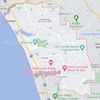

Nature's Best
Are you looking for a perfect getaway to enjoy the beauty and fun of the California coast and boost your health, energy and mood at the same time? Do you want to experience a charming city with natural wonders, cultural attractions and recreational activities, as well as delicious and nutritious foods that can prevent diseases, enhance your appearance and support your weight goals? If you answered yes, then you need to visit Carlsbad, California and eat more fruits and vegetables every day! Carlsbad is a coastal resort city that offers something for everyone. You can explore the amazing LEGOLAND, admire the colorful flower fields, relax at the lagoon, learn at the museum, shop at the village and more. You can also play golf, surf, swim, hike and bike in the scenic surroundings. Plus, you can enjoy fruits and vegetables that are packed with vitamins, minerals, antioxidants and fiber that can help you feel good and look great. They come in a variety of colors, flavors and textures that can satisfy your taste buds and cravings. Don't miss this chance to discover Carlsbad, California and improve your well-being and happiness with fruits and vegetables. CONTACT US
Order Fresh
Do you want to get the most out of your fruits and vegetables and enjoy their amazing health benefits in a convenient and delicious way? Do you want to make sure that your fruits and vegetables are free of harmful chemicals and pesticides that can compromise your well-being? If you answered yes, then you need to try organic juicing from fruits and vegetables! Organic juicing is a process of extracting the juice from fresh and organic fruits and vegetables, leaving behind the pulp and fiber. This way, you can consume more nutrients, enzymes, antioxidants and phytochemicals that can boost your immune system, detoxify your body, prevent diseases, improve your skin and hair, and increase your energy and mood. Plus, you can create your own combinations of flavors and colors that can suit your preferences and needs. Don't miss this opportunity to experience the benefits of organic juicing from fruits and vegetables. Order now and get a free juicer and a free book with 50 recipes to try! Call to Action
Environment
Do you love nature and want to protect it for future generations? Do you want to reduce your carbon footprint and help fight climate change? If you answered yes, then you need to support organic farming by buying our products! Organic farming is a sustainable way of growing food that does not use synthetic fertilizers, pesticides or genetically modified organisms. It preserves the fertility and diversity of the soil, saves water and energy, and prevents pollution and erosion. Plus, it promotes the welfare of animals and plants, and enhances the beauty of the landscape. Don’t miss this opportunity to make a difference for the environment with organic farming. Order now and get a free reusable bag with our logo!
Humidity:
Current Temperature:
Condition: